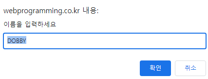

프롬프트(입력) 다이얼로그 prompt("메시지", "디폴트 입력값") 함수 -사용자로부터 문자열을 입력 받아 리턴 사용 방법 var ret = prompt("이름을 입력하세요", "DOBBY"); if(ret == null) { // 취소 버튼이나 다이얼로그를 닫은 경우 } else if(ret == "") { // 문자열 입력 없이 확인 버튼 누른 경우 } else { // ret에는 사용자가 입력한 문자열 } 실행 결과 